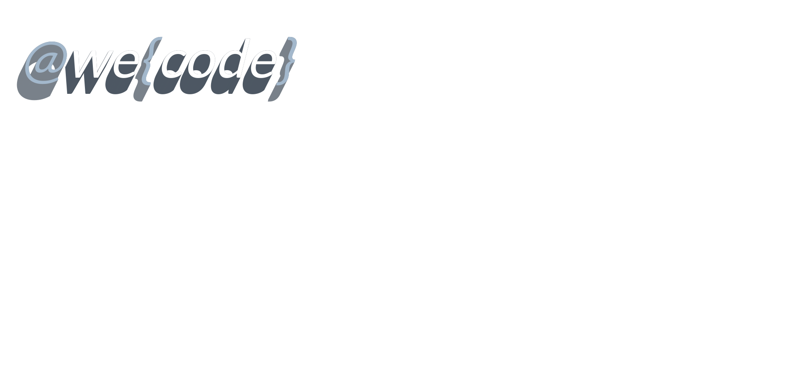
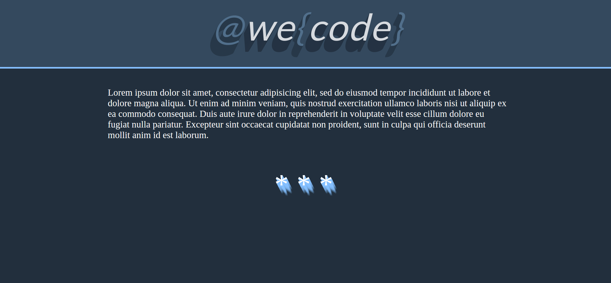

CSS Shadows and Gradients
Създаден за
Създаден от
2015 - 2020,

CSS3 text-shadow
Text Shadow
**********
Синтаксис
text-shadow: h-shadow v-shadow [blur-radius] color;
- h-shadow
- Задава хоризонтално отместване на сянката спрямо текста. Ако е отрицателно число, отместването е в ляво. Стойностите са единствено в CSS Length Units.
- v-shadow
- Задава вертикално отместване на сянката спрямо текста. Ако е отрицателно число, отместването е над-текста. Стойностите са единствено в CSS Length Units.
Синтаксис
text-shadow: h-shadow v-shadow [blur-radius] color;
- blur-radius
- Опционален параметър: задава радиус на blur ефекта. Стойностите са единствено в CSS Length Units.
- color
- Задава цвета на сянката. Стойностите са стандартизираните стойности за цвят.
В дясно
text-shadow: .1em 0 0 #D1D8B5;
Примерен текст
В ляво
text-shadow: -.1em 0 0 #D1D8B5;
Примерен текст
Долу
text-shadow: 0 .1em 0 #D1D8B5;
Примерен текст
Горе
text-shadow: 0 -.1em 0 #D1D8B5;
Примерен текст
Долу, в дясно
text-shadow: .1em .1em 0 #D1D8B5;
Примерен текст
Горе, в ляво
text-shadow: .1em .1em 0 #D1D8B5;
Примерен текст
Blur ефект
text-shadow: .1em .1em .3em #D1D8B5;
Примерен текст
Добавяне на повече от една сянка
text-shadow:
h-shadow v-shadow [blur-radius] color,
h-shadow v-shadow [blur-radius] color,
h-shadow v-shadow [blur-radius] color,
...;
Разделят се със запетая ','. Накрая се поставя ';'
Преливащи се цветове
color: hsl(0, 100%, 70%);
text-shadow:
1px 1px 0 hsl(360, 100%, 70%),
2px 2px 0 hsl(320, 100%, 70%),
3px 3px 0 hsl(280, 100%, 70%),
4px 4px 0 hsl(240, 100%, 70%),
5px 5px 0 hsl(200, 100%, 70%),
6px 6px 0 hsl(160, 100%, 70%),
7px 7px 0 hsl(120, 100%, 70%),
8px 8px 0 hsl(80, 100%, 70%),
9px 9px 0 hsl(40, 100%, 70%);
Примерен текст
Редуващи се цветове
color: hsl(120, 50%, 50%);
text-shadow:
1px 1px 0px hsl(120, 100%, 50%),
2px 2px 0px hsl(60, 100%, 50%),
3px 3px 0px hsl(120, 100%, 50%),
4px 4px 0px hsl(60, 100%, 50%),
5px 5px 0px hsl(120, 100%, 50%),
6px 6px 0px hsl(60, 100%, 50%),
7px 7px 0px hsl(120, 100%, 50%),
8px 8px 0px hsl( 60, 100%, 50%),
9px 9px 0px hsl(120, 100%, 50%);
Примерен текст
Resources
- w3schools: CSS3 text-shadow Property
- W3C: CSS tips & tricks: Text shadows
- Може да изберете превод на български език.
CSS3 box-shadow
Box Shadow
Синтаксис
box-shadow: [inset] h-shadow v-shadow blur-radius spread-radius color;
- inset
- Сянката се изобразява вътре в кутийката. Параметъра е опционален и ако не е зададен се подразбира outset (навън от кутийката)
- h-shadow
- Задава хоризонтално отместване (в дясно) на сянката спрямо кутийката на елемента. Ако е отрицателно число, отместването е в ляво. Стойностите са единствено в CSS Length Units.
Синтаксис
box-shadow: [inset] h-shadow v-shadow blur-radius spread-radius color;
- v-shadow
- Задава вертикално отместване (надолу) на сянката спрямо кутийката на елемента. Ако е отрицателно число, отместването е нагоре. Стойностите са единствено в CSS Length Units.
Синтаксис
- blur-radius
- Задава радиус на blur ефекта. Колкото по-голяма е стойността му, толкова повече ще изсветлява сянката в по-голям радиус. Стойностите са единствено в CSS Length Units. Не се допускат отрицателни стойности!
- spread-radius
- Задава радиуса, в който ще се разпростре сянката. Стойностите са единствено в CSS Length Units.
- color
- Задава цвета на сянката. Стойностите са стандартизираните стойности за цвят.
Допълнителни материали:
CSS3 Gradients
Slef-learning section
CSS3 GradientsПримери
Codepen collection:
CSS_Shadows_and_GradientsЗадачи за упражнение
Задача 1: we_code_logo
Фиг.1
{kind=link}
Задача 1: we_code_logo
- Да се напише валиден код, който реализира логото показано на фиг.1.
- Забележки:
- Използван е шрифт:
'Lato'(Google Fonts: Lato) - Над буквите и символите в текста на логото се прилага еднаква сянка с цвят:
rgba(34, 47, 61, .5) - Буквите в текста на логото са с цвят:
rgba(255, 255, 255, .8) - Символите в текста на логото ( @, { и } ) са с цвят:
rgba(103, 137, 171, .6);
Задача 2: we_code_logo_page
Фиг.1
{kind=link}
Задача 2: we_code_logo_page
- Да се напише валиден код, който реализира страницата показана на фиг.1.
- Забележки:
- Използвано е логото в предходната задача
- Импровизирайте с цветовете за останалите елементи.
These slides are based on
customised version of
framework